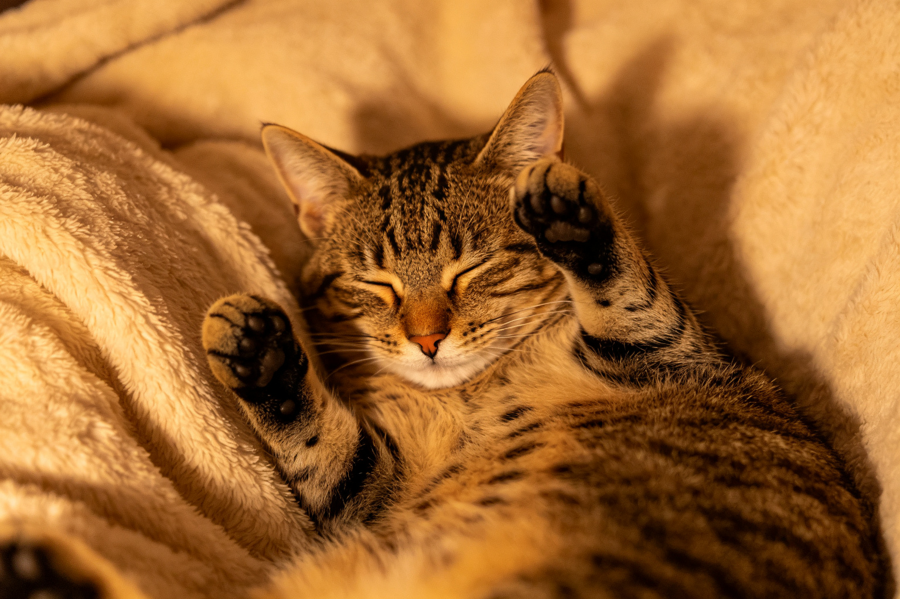
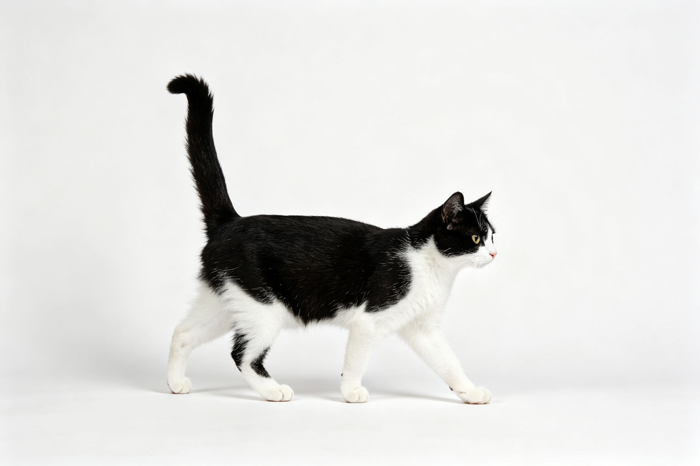
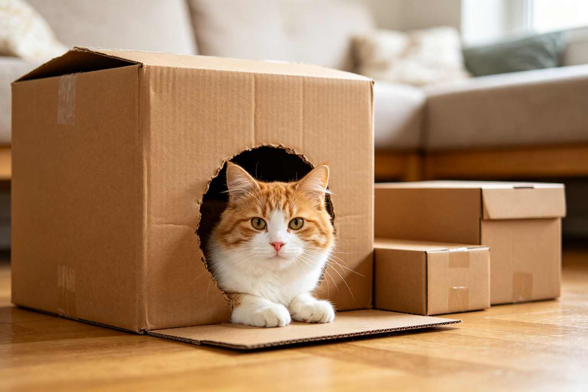
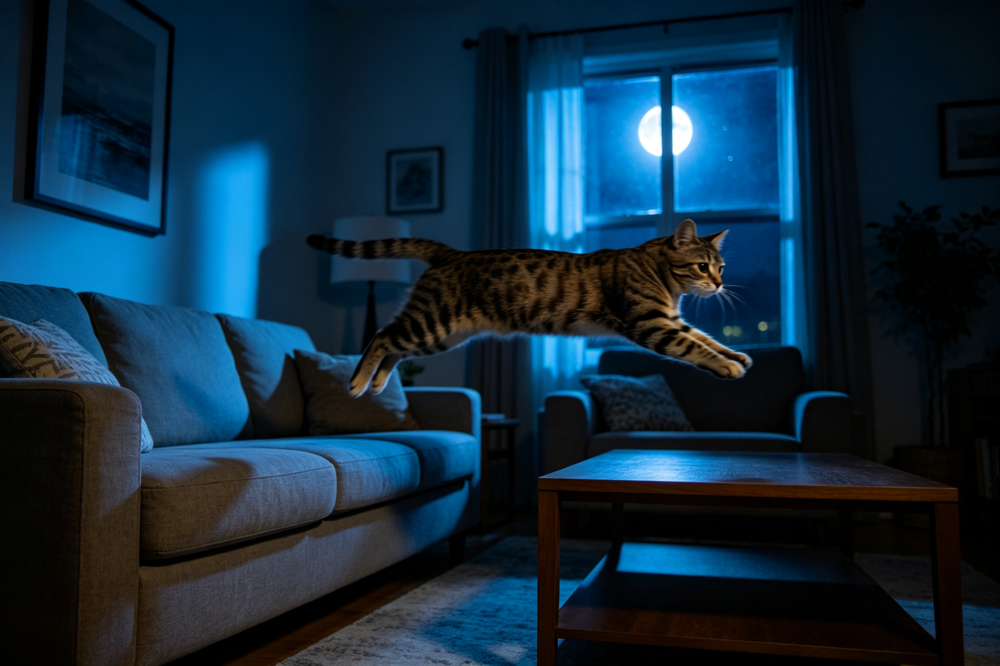
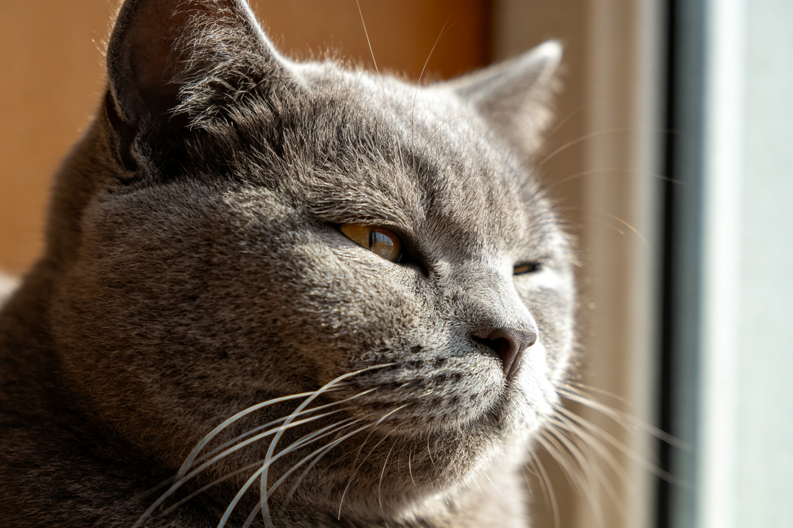
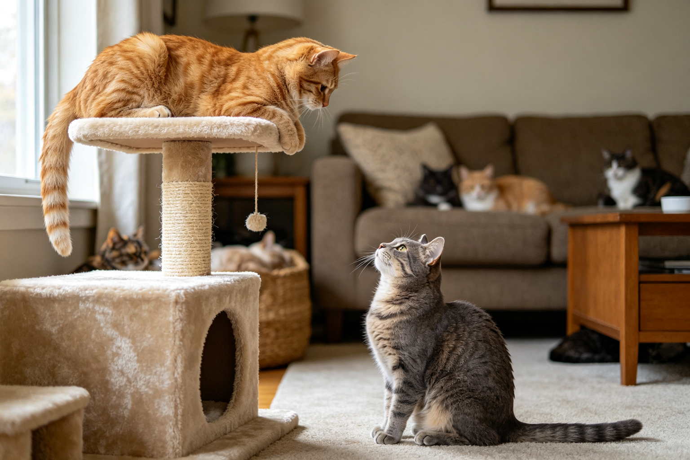
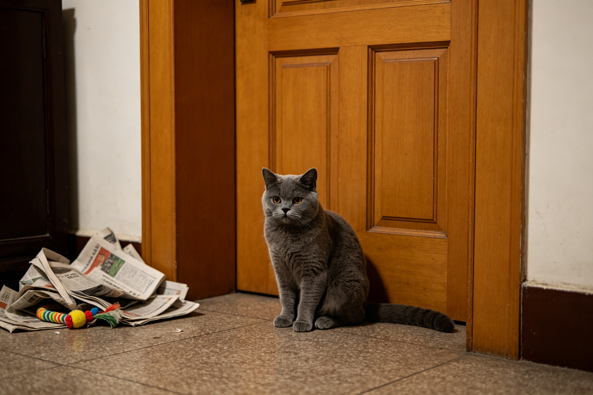
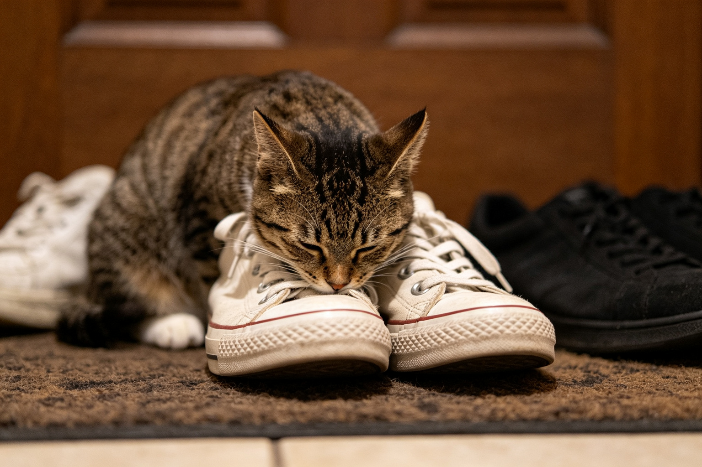

🐱 貓行為實驗室
貓咪為什麼會踩奶？行為學解析
貓咪踩奶不是在做麵包，而是幼兒期哺乳行為的延續。從心理依附、神經化學到環境安全感，完整解讀貓咪踩奶的科學原因。...

🐱 貓行為實驗室
貓咪尾巴姿勢：12種尾巴語言解讀
豎直、彎曲、夾腿、甩尾——貓咪的尾巴是最誠實的情緒測謊儀。12種尾巴姿勢的行為學意義完整圖解，從此讀懂貓咪心情。...

🐱 貓行為實驗室
貓咪為什麼喜歡鑽紙箱？空間偏好心理學
貓咪見箱就鑽不是因為調皮，而是演化賦予的生存本能。從隱蔽狩獵、壓力荷爾蒙降低到環境掌控感，科學解讀貓咪的紙箱情結。...

🐱 貓行為實驗室
貓咪夜間跑酷：為什麼凌晨3點最活躍
凌晨3點客廳傳來貓咪百米衝刺的腳步聲——這不是惡作劇，而是貓咪的演化時鐘在作用。從晨昏活動性、狩獵本能到室內貓的能量管理，完整解析。...

🐱 貓行為實驗室
貓咪慢眨眼是在說我愛你嗎？表情行為學
貓咪緩慢眨眼被稱為「貓咪之吻」，但這真的是愛的表達嗎？從貓咪的視覺溝通、放鬆訊號到人貓互動的雙向影響，科學解讀這個溫柔的表情。...
🐱 貓行為實驗室
貓咪為什麼會把東西撥下桌？狩獵本能解析
桌上的水杯、鑰匙、手機——貓咪總是能精準地把它們撥到地上。這是純粹的惡作劇，還是有更深層的行為學原因？從狩獵練習、注意力尋求到物體恆存概念，完整解析。...

🐱 貓行為實驗室
多貓家庭階級關係：如何判斷誰是老大
多貓家庭的和平不是靠運氣，而是靠理解貓咪的社會結構。從資源守衛、空間使用、肢體語言到介入時機，行為學家教你建立和諧的多貓家庭。...

🐱 貓行為實驗室
貓咪分離焦慮：7個訊號與調整方案
貓咪也會有分離焦慮——過度舔毛、拒食、嚎叫、亂尿可能不是「調皮」，而是焦慮的表現。7個早期訊號辨識、行為調整步驟與何時需要專業協助的完整指南。...

🐱 貓行為實驗室
貓咪為什麼喜歡聞你的鞋子？嗅覺行為解析
貓咪見到你的鞋子就埋頭猛聞，不是因為腳臭味好聞，而是鞋子上承載了你的全天「資訊日誌」。從貓咪的嗅覺靈敏度、費洛蒙溝通到氣味記憶，科學解密這個獨特行為。...